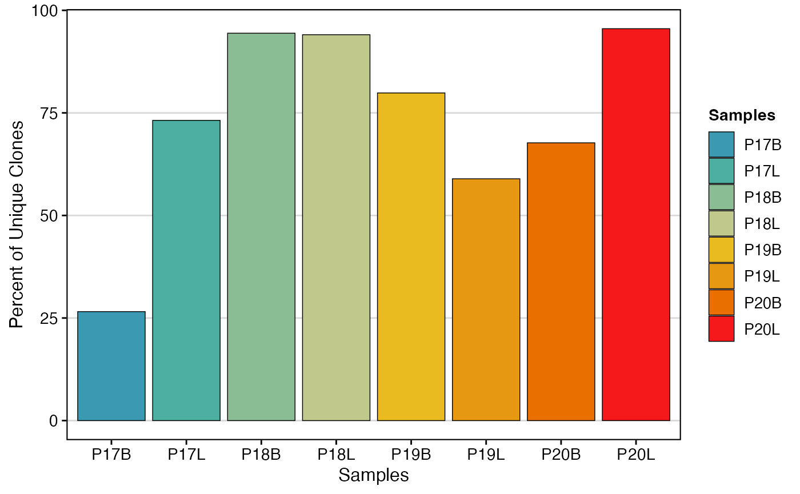

Frequently Asked Questions
Compiled: November 04, 2023
FAQ.RmdBarcode Mismatch
Depending on the pipeline used to generate the single-cell object,
there may be inherent mismatches in the barcodes in the single-cell
object and the output of combineBCR() or
combineTCR(). In particular, by default, Seurat will amend
the suffix of the barcodes with _X, so the barcodes change like:
original: ACGTACGTACGTACGT-1
seurat-modified: ACGTACGTACGTACGT-1_1scRepertoire uses the samples in combineTCR() to add a prefix to the barcodes:
original: ACGTACGTACGTACGT-1
scRepertoire-modified: Sample1_ACGTACGTACGTACGT-1The easiest way to make these compatible is to rename the cell barcodes in the Seurat object by using the RenameCells().
cell.barcodes <- rownames(seuratObj[[]])
cell.barcodes <- stringr::str_split(cell.barcodes, "_", simplify = TRUE)[, 1] #This is removing the _1 at the end of the barcodes)
cell.barcodes <- paste0(seuratObj$orig.ident, "_", cell.barcodes) #This is adding the prefix of the orig.ident to the barcodes, assuming that is the sample ids
seuratObj <- RenameCells(seuratObj, new.names = cell.barcodes)Adjusting Color Palettes
For all visualizations in scRepertoire, there are 2 ways to adjust
the color scheme: + Change the palette parameter to the
desired color scheme. This approach uses the built-in palettes of
grDevices and we can access the list of color schemes using
hcl.pals().
+ Add a ggplot layer with a new color scheme.
clonalQuant(combined.TCR,
cloneCall="strict",
chain = "both",
scale = TRUE,
palette = "Zissou 1")
clonalQuant(combined.TCR,
cloneCall="strict",
chain = "both",
scale = TRUE) +
scale_fill_manual(values = hcl.colors(8,"geyser"))
Getting Data Used in Plots
Within each of the general analysis functions, there is the ability to export the data frame used to create the visualization. To get the exported values, use exportTable = TRUE. It will return the data frame used to make the graph instead of the visual output.
clonalQuant_output <- clonalQuant(combined.TCR,
cloneCall="strict",
scale = TRUE,
exportTable = TRUE)
clonalQuant_output## contigs values total scaled
## 1 745 P17B 2805 26.55971
## 2 2117 P17L 2893 73.17663
## 3 1254 P18B 1328 94.42771
## 4 1202 P18L 1278 94.05321
## 5 5544 P19B 6942 79.86171
## 6 1619 P19L 2747 58.93702
## 7 6087 P20B 8991 67.70103
## 8 192 P20L 201 95.52239Citing scRepertoire
Borcherding, N. & Wang, Q. scRepertoire v2: Expanded toolkit for single-cell immune repertoire analysis
Bug Reports/New Features
Submit a GitHub issue - if possible please include a reproducible example. Alternatively, an example with the internal scRep_example and contig_list would be extremely helpful.
Features or Enhancements Requests
Feature request can also be submitted as GitHub issues.